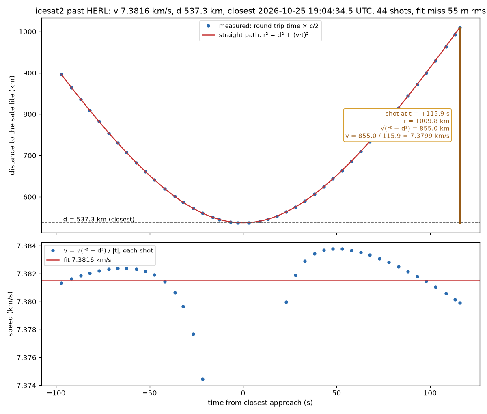

Doppler kit
Measure a passing transmitter's speed and closest distance from your own radio or sound recording. Only the frequency shift you receive is used. No station position, no orbit and no map are needed. The kit also reads satellite laser ranging, where the distances themselves are measured.
From one recording you get:
- v: the speed of the source along its path.
- d: the closest distance between you and the source. When the pass goes straight over you, d is its height. From several passes, the smallest d comes closest to the height.
- t₀: the time of closest approach.
- f₀: the frequency the source actually transmits.
- Path: whether the source went past in a straight line or on a bending path.
- The distance at the first and last point of the trace.
- Pictures of the S-curve and the waterfall, with the plateaus, the middle, the two half-plateau points and the width Δt marked where they fall.
What you need
- Python 3 with numpy, scipy and matplotlib:
pip install numpy scipy matplotlib. Tkinter for the window (included with Python on Windows and macOS;python3-tkortkon Linux). ffmpeg for compressed audio. - A recording made at a fixed frequency with Doppler correction off, through the whole pass if you can:
- a WAV file with 2 channels (I and Q), 8-bit, 16-bit or 32-bit float, such as an SDR++ "baseband" recording,
- a headerless raw IQ file (
.raw,.cs16,.cf32,.cu8,.sigmf-data) with its sample rate, or - audio: a 1-channel WAV,
.ogg,.mp3,.flac,.m4aor.opus. This can be a receiver's audio output in USB or CW mode, or a plain sound recording of a passing source (a horn, an engine, a siren). The strongest tone is tracked, or the tone inside a band you give with--band.
- The centre frequency of the recording. For radio, v needs the real centre. The kit reads it from an SDR++ file name
(
baseband_437800000Hz_...), a SigMF meta file or a SatNOGS observation. If none of these has it, type it in. For receiver audio, type the dial frequency (USB). The kit cannot find a dial frequency. For a sound recording, leave it blank. - Or a laser-ranging file: see Laser ranging below.
A cheap RTL-SDR and a simple antenna are enough for the ISS (437.800 MHz FM repeater, 145.800 MHz voice).
Run
The window:
python3 doppler_gui.py
Pick the recording and press Run. Leave a field blank and the kit works the value out from the file (see "Blank fields" below). After a run, each worked-out value shows as "auto: ..." next to its field. The values you type stay as you typed them. The tabs show the waterfall, the S-curve and the marked waterfall. The Results tab lists every number: v, d, t₀, f₀, the plateaus, the half-plateau points and Δt, the three ways to v and d, the path test and the distances. For a sound recording choose "sound in air (343 m/s)".
From the command line:
python3 iq_to_trace.py my_recording.wav
python3 fit_pass.py my_recording_trace.csv
Other inputs:
python3 iq_to_trace.py my_recording.wav --center 145800000 --start 2026-06-01T12:00:00Z
python3 iq_to_trace.py iq_5408034.raw --rate 48000 --center 437800000 # raw 16-bit IQ
python3 iq_to_trace.py capture.cf32 --rate 250000 --center 437800000 --format cf32
python3 iq_to_trace.py beacon_usb.ogg --center 145796000 # receiver audio, dial frequency
python3 iq_to_trace.py horn.wav && python3 fit_pass.py horn_trace.csv --c 343 # sound
python3 iq_to_trace.py aircraft.wav --band 1300 2700 # sound: engine tone between 1300 and 2700 Hz
python3 iq_to_trace.py pocketqube.cf32 --rate 48000 --center 436650000 --format cf32 --burst # short FSK bursts
Options: --span (search ± Hz around the centre, default: found by the scan), --swap-iq (Q stored before I), --out (output folder),
--band LO HI (search only this band, see below), --burst (signal in short bursts, see below), --fm (FM carrier such as ISS SSTV, see below).
For the fit: --c (wave speed, default radio and light; 343 for sound) and --f0 (fix the transmitted frequency).
fit_pass.py also takes a trace from anywhere else: a CSV with columns t_s and f_Hz.
In the window, fill in "Tone band low / high (Hz)" for --band and tick "Burst signal (FSK satellites)" for --burst and "FM carrier (ISS SSTV, voice)" for --fm.
Blank fields
A value you type always wins. For each blank field the kit looks in the file, in this order, and logs the value with its source,
for example auto: centre 437,800,000 Hz (from file name).
- SigMF: a
FILE.sigmf-metabesideFILE.sigmf-data(or pick the.sigmf-metafile). It gives the sample rate, the sample format (ci16_le,cf32_le,cu8), the centre frequency and the start time. - WAV header: the sample rate, the channels and the sample size.
- File name: an SDR++ name holds the centre frequency (
..._437800000Hz_...). - SatNOGS: a file
iq_<observation id>.rawis 48,000 S/s, 16-bit. The kit asks network.satnogs.org for the start time and the centre frequency of the observation. It sends only the observation id. When the computer is offline, the kit says so and goes on. - Start time: when no other source has it, the kit takes the time the file was last changed and subtracts the length of the recording. The log marks this value "check it". Copying a file can change this time.
Radio needs the real centre frequency for v. It must come from the file name, SigMF, SatNOGS or you.
Search span (scan). When the span is blank, the kit first looks over the full recorded band. It takes short spectra spread over the whole file, divides every frequency bin by its median over time (a steady line goes to 1) and follows the strongest line that falls in frequency. It looks near the centre first (±21.6 kHz), then over the whole band. The span then covers the line plus a margin, and stays at 15,000 Hz when the line fits inside. A line outside the default window moves the centre to it. When no moving line is found, the span is 15,000 Hz and the log says so.
Tone band (audio). When no band is given, the same scan picks the strongest tone that moves (falls in frequency) and sets the band around its swing. A steady tone, such as low engine rumble, does not count. When the strongest tone in the recording is the moving one, no band is needed and the kit tracks it as before.
Burst mode. When "Burst" is not ticked and the trace looks like bursts (it covers less than 30% of the recording, moves less than a fifth of the span, or does not fit a pass cleanly), the kit also runs burst mode. It keeps the clean pass that covers more of the recording and logs which one it used and why. A tick forces burst mode.
Tone band (--band LO HI)
Use it when a different sound or signal is stronger than the one you want. For example, the low rumble of an aircraft engine (50 to 135 Hz) is often stronger than the engine tone. Without a band, the trace jumps between the two.
- Audio: LO and HI are audio frequencies in Hz. The kit uses only the sound between LO and HI.
- IQ: LO and HI are offsets in Hz from the centre frequency, for example
--band -5000 3000.
Look at the waterfall or a spectrum of the recording first. Choose a band that holds the whole S-curve of the tone and leaves out the other strong sounds. The search span is then half the band width.
Burst signals (--burst)
Some satellites do not send a steady carrier. They send short packets (FSK) every few seconds.
The recording can also hold steady lines from the receiver or from other transmitters, and these lines can be stronger than the packets.
The normal tracer then follows a steady line or only part of a packet.
--burst finds the packets under the steady lines and gives one point for each half second that holds a packet.
The trace file has the same columns, so fit_pass.py works the same way.
When you do not give --burst, the kit tries burst mode by itself when the trace looks like bursts (see "Blank fields").
FM carriers (--fm)
Some satellites send FM: the ISS sends SSTV pictures and voice on 145.800 MHz. FM spreads the signal over about 15 kHz,
and the strongest part of the spectrum jumps around the carrier, so the normal tracer and burst mode follow the picture
content, not the carrier. --fm (in the window: tick "FM carrier") gives one point every half second: the centre of the
signal's energy in each 1 s frame. The mean frequency of an FM signal is its carrier.
Each frame: noise = the median bin power; the strongest 2000 Hz band must be at least 15 dB over it; the point is the centroid of the power above 5 times the noise, within ±10 kHz of that band, with the window moved to the centroid 3 times. Outliers are dropped as in burst mode.
Output
| File | Content |
|---|---|
<name>_trace.csv |
t_s, utc, f_offset_Hz, f_Hz, snr_dB: received frequency against time |
<name>_waterfall.png |
0.1 s spectra, frequency across and time up the page, with the measured trace in red |
<name>_waterfall.npz |
the waterfall data, used for the marked waterfall |
<name>_summary.json |
settings (with band_Hz and burst), number of points, point noise, the frequency swing, fixed receiver lines found, and under auto every value the kit worked out, with its source |
fit_pass.py
| File | Content |
|---|---|
<name>_fit.json |
v, d, t₀, f₀ with errors (full fit), the plateau estimate, the marks, the path test with detectable_rms_Hz, the distances at the first and last point |
<name>_scurve.png |
the S-curve with plateaus f₊ and f₋, middle f₀, half-plateau points, Δt, and the numbers worked from them; below it, what the fit leaves over |
<name>_waterfall_marked.png |
the waterfall with the fitted curve, f₊, f₀, f₋, the half-plateau points and Δt marked |
Check that it works
python3 make_test_iq.py
It writes a 300 s synthetic recording of a known pass (7.660 km/s, 420 km), runs both scripts with the file alone, compares the answer
and deletes the recording. A second run with --span 15000 must give the same v and d. Then it does the same with --burst for a 300 s pass of short FSK bursts (7.400 km/s, 600 km)
under a steady line five times stronger, and once more without --burst: burst mode must come on by itself and give the same trace. It also checks slr_fit.py on a synthetic laser pass. It ends with self-check passed. These are its pictures:


Doppler-corrected recordings do not work
Many receivers, SatNOGS stations among them, retune along the Doppler predicted from the published orbit while they record.
Their recordings hold only what is left over after that prediction, a nearly straight line instead of an S.
iq_to_trace.py prints a note when the signal moves less than a fifth of the search span.
Example: SatNOGS observation 5408034, the ISS at 437.800 MHz on 3 February 2022, recorded by the Dwingeloo radio telescope. The ISS carrier stays within about 270 Hz for the whole pass. A pass recorded at a fixed tuning moves about ±10 kHz.

Data: CAMRAS, Dwingeloo radio telescope, SatNOGS IQ data, CC BY 4.0, https://data.camras.nl/satnogs/
How it works
The trace (iq_to_trace.py)
- Decimate to about 48,000 samples a second with a polyphase filter, and remove the receiver's DC line.
- Find the signal: 0.25 s spectra, every bin and every frame divided by its median, fixed receiver lines masked, strongest 300 Hz band per frame. A smooth S-shaped curve through it steers the next steps only.
- Measure: multiply the recording by the conjugate phase of that curve (dechirp), so the carrier sits near 0 Hz. Then 1.0 s Hann windows every 0.25 s on a 1 Hz grid, searching ±400 Hz, then ±100 Hz, then ±150 Hz, each time with a better reference. The value is the noise-subtracted power centroid in the band.
- Keep a point when its peak is more than 14 dB above the frame median, it is not on a fixed receiver line, and it lies within 4 sigma of a smoothing spline. Sigma (the point noise) comes from second differences.
Points are 0.25 s apart but each uses a 1 s window, so only every 4th point is independent. fit_pass.py allows for this in its errors.
With --band LO HI
- One FFT of the whole recording. All bins outside LO to HI are set to zero (for audio also all negative frequencies). Then the inverse FFT, and the band centre is moved to 0 Hz. The search span is (HI − LO)/2.
- The steps above follow. In each measuring pass, the bins that came from outside the band are left out. The noise floor of a spectrum is the median of the bins inside the band.
- Audio has no receiver DC line and no fixed receiver lines, so nothing is blanked. A tone that stays on one plateau for most of the clip stays in the trace.
With --burst
- Spectra of 0.5 s (Hann window, no overlap), smoothed over 100 Hz.
- Every bin is divided by its running median over ±20 s. A steady line, present most of the time, goes to 1. A short packet stands above 1.
- In each spectrum, take the 2000 Hz band with the most excess power. Keep the spectrum when that band is 6 dB or more above the floor.
- The point is the power centroid of the excess in that band. For a packet with two FSK tones, this is the middle between the two tones.
- Fit the S-curve shape to all points with a robust fit, from 45 start values. Drop the points more than 800 Hz from that curve.
The fit (fit_pass.py)
A source moving in a straight line at constant speed v, closest distance d at time t₀, transmitting f₀. With the travel time of the signal included, the received frequency is
f(t) = f₀ / (1 + v² τ / (c √(d² + v² τ²)))
where τ is the emission time from closest approach. Read off the curve:
- Plateaus f₊ = f₀/(1 − v/c) coming and f₋ = f₀/(1 + v/c) going, so v = c (f₊ − f₋)/(f₊ + f₋) and f₀ = 2 f₊ f₋/(f₊ + f₋).
- Half-plateau points: where the distance changes at half the speed (±v/2), f = f₀/(1 ∓ v/2c). The time between them is Δt, and d = Δt · v · √3/2.
- Slope at the middle: d = f₀ v² / (c · |slope|).
- Full fit: least squares of the whole curve, free t₀, v, d and f₀. This is the result to use. A pass cut short by the horizon never reaches its plateaus, so the plateau estimate alone reads v and d low.
What the fit leaves over shows the path: a straight path leaves scatter around zero, a bending path leaves a smooth wave.
fit_pass.py fits a degree-6 polynomial through the leftover and compares it with the scatter (F-test, counting only independent points).
When the smooth part stands out (p below 0.001) the path is reported as bending, otherwise as "no bending detected".
The report also gives the smallest smooth pattern this recording can detect. With N points, pattern rms A, scatter rms s and the F-test degrees of freedom d₁ = 7 and d₂ = n_eff − 7:
RSS₀ − RSS₁ = N A²
RSS₁ = N s²
F = (A² / s²) · d₂ / d₁
bending when F ≥ F_crit, the 0.999 point of the F(d₁, d₂) distribution
A_min = s · √(F_crit · d₁ / d₂)
A_min is detectable_rms_Hz in the fit file. A smaller pattern can be there and not be seen.
Laser ranging
Laser stations fire short pulses at a satellite and time each return. Each shot gives a distance directly:
r = round-trip time × c / 2
A satellite flying straight past the station at speed v, closest distance d at time t₀, is at
r² = d² + (v · t)² (Pythagoras, t from closest approach)
so every shot gives the speed on its own:
v = √(r² − d²) / |t|
slr_fit.py fits d, v and t₀ to all shots within ±3 minutes of the closest one.
python3 slr_fit.py https://edc.dgfi.tum.de/en/data/npt2/1166240/ # one pass, from its EDC page
python3 slr_fit.py icesat2_20261025.np2 --pass 3 # a daily CRD file, plot pass 3
It writes <name>_slr.csv (v, d, closest time, shots and fit miss for every pass) and <name>_pass<N>.png.
The window takes .np2, .npt and .crd files too.
Example: ICESat-2 past Herstmonceux (UK) on 25 October 2026, 44 shots. The last shot, 115.9 s after closest approach, is 1,009.8 km away: √(1,009.8² − 537.3²) = 855.0 km along the path, and 855.0 / 115.9 = 7.38 km/s.

Data: EUROLAS Data Center (EDC), DGFI-TUM, https://edc.dgfi.tum.de/
Tested recordings
Recordings made by others, measured with the kit alone. No position, orbit or flight data went into the measurement.
Aircraft sound (--band, fit_pass.py --c 343.8). Reference: a straight-line fit to the ADS-B positions over 10 s around closest approach.
| Aircraft (ICAO) | Band (Hz) | Kit: v | Kit: d | ADS-B: v | ADS-B: d |
|---|---|---|---|---|---|
| 7C6D29 | 1300 to 2700 | 82.0 ± 1.4 m/s | 229 ± 15 m | 82.9 m/s | 224 m |
| 7C6DA0 | 1300 to 2600 | 79.6 ± 1.5 m/s | 244 ± 15 m | 80.4 m/s | 223 m |
| 7C77D9 | 2000 to 4000 | 73.0 ± 2.3 m/s | 255 ± 26 m | 74.2 m/s | 246 m |
| 7C7773 | 1500 to 3000 | 107 ± 10 m/s | 735 ± 164 m | 74.8 m/s | 290 m |
In the 7C7773 clip the tone stops at 12.5 s, before the falling half of the S-curve. The fit has only one plateau to work with.
Data: Downward, B. (2023). AeroSonicDB (YPAD-0523): Labelled audio dataset for acoustic detection and classification of aircraft (Version 0.3) [Data set]. Zenodo. https://doi.org/10.5281/zenodo.8004108 (https://zenodo.org/records/8004108, licence on the Zenodo page: CC BY 4.0). ADS-B positions: ADS-B Exchange, historical data samples, https://www.adsbexchange.com/
Satellites (--burst). Reference: published-orbit model (TLE), straight-line fit over the same time span.
| Satellite | Kit: v | Kit: d | Kit: t₀ (UTC) | Published-orbit model (TLE): v | d |
|---|---|---|---|---|---|
| DELFI-PQ, 2022-01-16, 436.650 MHz | 7.234 ± 0.027 km/s | 890.9 ± 10.7 km | 17:58:57.11 | 7.238 km/s | 889.7 km |
| HADES-D, 2023-12-09, 436.666 MHz | 7.41 ± 0.15 km/s | 564 ± 28 km | 11:21:17.35 | 7.355 km/s | 544.8 km |
Data: Estévez, D. (2022). Recording of DELFI-PQ/EASAT-2/HADES PocketQubes and other amateur satellites in the SpaceX Transporter 3 launch with the Allen Telescope Array on 2022-01-16 [Data set]. Zenodo. https://doi.org/10.5281/zenodo.5876090 (https://zenodo.org/records/5876090, CC BY 4.0).
Estévez, D. (2023). Recording of HADES-D satellite [Data set]. Zenodo. https://doi.org/10.5281/zenodo.10343047 (https://zenodo.org/records/10343047, CC BY 4.0).
The kit read narrow channels cut from these wideband recordings: 48,000 S/s around 436.650 MHz (DELFI-PQ), and 50,000 S/s around 436.666 MHz for the second part of the HADES-D recording.
ISS (--fm). The receiver position is not published, so there is no orbit reference for this pass.
| Recording | Kit: v | Kit: d | Kit: t₀ (UTC) |
|---|---|---|---|
ISS SSTV, 2020-10-04, 145.800 MHz, SDRSharp_20201004_025552Z_145449912Hz_IQ.wav |
7.176 ± 0.034 km/s | 487.8 ± 5.5 km | 02:57:36.6 |
Data: SDR# IQ recordings of ISS SSTV, 2020-10-04, Internet Archive item sdrsharp-20201004-025552-z-145449912-hz-iq, https://archive.org/details/sdrsharp-20201004-025552-z-145449912-hz-iq (1,024,000 S/s, 16-bit IQ, fixed tuning). The start time is the UTC time in the file name.
Where to find recordings
Recordings made by others. Check each one for Doppler correction before you use it.
- CAMRAS Dwingeloo telescope, SatNOGS IQ data (Doppler-corrected): https://data.camras.nl/satnogs/
- Other SatNOGS stations sharing IQ, and the discussion of their format: Long-term Raw I/Q data request (Libre Space)
- BY70-2 satellite beacon recording (Zenodo), Linrad raw format
- Artemis I EQUULEUS recording, Allen Telescope Array (Zenodo)
- OSIRIS-REx recording, Allen Telescope Array (Zenodo)
- LoRadar: raw IQ of satellite-to-ground LoRa signals (Zenodo)
- IQEngine: browse and share IQ recordings (GitHub), site at https://iqengine.org
- Laser ranging, every station and satellite, normal points in CRD format: EUROLAS Data Center and NASA CDDIS
Related
Doppler simulator and calculator: https://alanspaceaudits.github.io/theorema-egregium/doppler_sim/